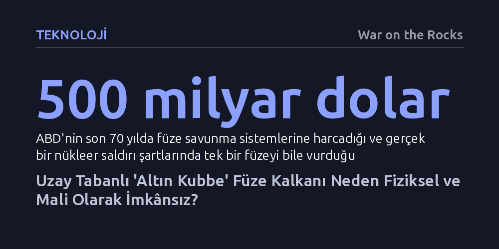

TEKNOLOJI · War on the Rocks · 2026-10-16
ABD'nin balistik füzelere karşı planladığı uzay tabanlı 'Altın Kubbe' kalkanı, yörünge mekaniği ve füze fiziğinin kısıtları nedeniyle teknik ve mali açıdan imkânsızdır. Trilyonlarca dolarlık yatırımlara rağmen bu sistem, sınırlı bir nükleer saldırıyı dahi güvenilir biçimde durduramaz.
Füze kalkanlarının nükleer tehditleri tamamen önleyebileceği yanılsamasını yıkarak, nükleer güvenliğin tek gerçekçi yolunun teknolojik kalkanlar değil diplomasi ve silah kontrolü olduğunu ortaya koyuyor.

Nükleer başlıklı kıtalararası balistik füzelerin ortaya çıkışından bu yana askeri stratejistler, gökyüzünü aşılmaz bir zırhla kaplama fikrinin peşinden koşuyor. Şehirleri nükleer bir yıkımdan koruyacak kusursuz bir kalkan vaadi kulağa ne kadar çekici gelse de, bu arayışın arkasında yetmiş yıllık bir hayal kırıklığı tarihi yatıyor. ABD bugüne kadar stratejik füze savunmasına 500 milyar doların üzerinde kaynak ayırdı; fakat gerçek bir nükleer saldırı koşullarında bu sistemlerin tek bir kıtalararası füzeyi dahi imha edebileceği operasyonel olarak hiçbir zaman kanıtlanamadı.
Trump yönetiminin gündeme getirdiği "Altın Kubbe" (Golden Dome) projesi, bu kadim hayali kara, deniz ve uzay katmanlarından oluşan devasa bir savunma mimarisine dönüştürmeyi hedefliyor. Yalnızca balistik füzeleri değil; seyir füzelerini, hipersonik araçları ve insansız hava araçlarını da her an ve her coğrafyadan fırlatıldığında durduracağı iddia edilen bu kalkan, aşılmaz bir güvenlik kubbesi olarak pazarlanıyor. Ancak projenin vadettiği mutlak koruma, ne mevcut teknolojinin sınırlarıyla ne de temel fizik yasalarıyla bağdaşıyor.
Bir balistik füzeyi durdurmanın teorik olarak en cazip yolu, motorunun yandığı ilk safha olan "yükselme aşaması"nda (boost phase) müdahale etmektir. Çünkü füzenin motor alevi uzaydaki kızılötesi sensörler için belirgin bir hedef oluşturur ve roket henüz çoklu savaş başlıklarını veya sahte hedefleri gövdesinden ayırmamıştır. Ancak roket fiziği, savunma sistemlerine neredeyse hiç vakit bırakmaz. Modern katı yakıtlı kıtalararası füzelerin motor yanma süresi üç dakikanın, hatta yeni nesil tasarımlarda iki dakikanın altındadır.
Fırlatılan bir füzenin bulut tabakasının üzerine çıkıp sensörlerce tespit edilmesi yaklaşık 30 saniye sürer. Yörüngenin hesaplanması ve hedefin bir uzay roketi değil de gerçek bir nükleer saldırı olduğunun teyit edilmesi en az 75 saniyeyi bulur. Geriye kalan 25 ila 75 saniyelik daracık zaman diliminde, uzaydaki bir önleme roketinin hızla yükselen ve manevra yapan füzeye yetişip çarpması pratikte imkânsızdır. Bu denli kısa bir karar penceresi, olası kriz anlarında vahim hesap hataları ve nükleer tırmanma riskini de tehlikeli biçimde tırmandırır.
Önleme roketlerinin füzeye zamanında ulaşabilmesi için tek seçenek, onları uzayda, olası fırlatma sahalarının hemen üzerinde konuşlandırmaktır. Ne var ki burada astrodinamiğin değiştirilemez bir kuralı devreye girer: Gezegen etrafında dönen uydular sabit duramaz; Dünya onların altında dönmeye devam eder. Bu durum "uzakta kalma" (absentee) olarak adlandırılan yapısal bir handikapa yol açar. Bir füze ateşlendiğinde, uzaydaki önleme roketlerinin ezici çoğunluğu hedef coğrafyanın çok uzağında kalmaktadır.
Fiziksel modellemeler, Kuzey Kore veya Rusya'dan aynı anda ateşlenebilecek yalnızca 4 kıtalararası füzeyi engellemek için yörüngede yaklaşık 24.000 önleme roketinin devriye gezmesi gerektiğini gösteriyor. Eğer hedef Rusya'nın tatbikatlarını yaptığı gibi 10 füzeli bir salvo saldırısıysa, gereken roket sayısı 60.000'e fırlıyor. Üstelik modern hava savunma pratiklerinde olduğu gibi her füzeye karşı başarı ihtimalini artırmak amacıyla birden fazla önleyici atıldığında, yörüngeye 180.000 roket yerleştirmek gerekecektir. Bu boyutta bir sistemin maliyeti trilyonlarca doları aşarken, uzayın sert ortamında yıllarca bakım görmeden kusursuz çalışması beklenemez.
Füze kalkanı savunucuları, yükselme aşamasında vurulamayan hedeflerin uzay boşluğundaki "orta safha"da imha edilebileceğini öne sürer. Ancak uzay ortamında hava sürtünmesi bulunmadığı için son derece basit karşı tedbirler dahi savunmayı felç etmeye yeterlidir. Ağırlığı birkaç kilogram olan metal kaplı şişme bir balon ile tonlarca ağırlıktaki gerçek bir nükleer savaş başlığı, yerçekimi altında tıpatıp aynı yörünge ve hızda ilerler.
Savunma radarlarının ve sensörlerinin, savaş başlığını çevreleyen onlarca sahte hedef ve tuzak arasından gerçeğini ayırt etme (discrimination) kabiliyeti on yıllardır çözülememiş bir problemdir. Buna ek olarak hasım güçler, uydusavar füzelerle savunmanın gözlerini kör edebilir ya da uzayda nükleer patlamalar gerçekleştirerek önleme uydularının elektronik donanımlarını devre dışı bırakabilir. Savunmanın her bir önlemine karşılık saldıran tarafın çok daha ucuza üretebileceği taktikler mevcuttur.
Kongre Bütçe Ofisi'nin kısıtlı bir modül için dahi 1,2 trilyon dolar maliyet öngördüğü Altın Kubbe mimarisi, gerçek bir stratejik güvence sağlamaktan uzaktır. Milyarlarca dolarlık harcamalar caydırıcılık yaratmadığı gibi, rakipleri daha hızlı yanan füzeler, manevra yapabilen hipersonik başlıklar ve daha kalabalık fırlatma taktikleri geliştirmeye teşvik ederek nükleer silahlanma yarışını körüklemektedir.
Tarihsel tecrübe, nükleer füzelerin yarattığı varoluşsal tehdidi ortadan kaldırabilecek mucizevi bir teknolojik kalkan olmadığını defalarca kanıtlamıştır. Müzakeresi ne kadar meşakkatli olursa olsun, nükleer tehdidi azaltmanın geçmişte işe yaramış tek başarılı yöntemi stratejik risk azaltma mekanizmaları ve denetlenebilir silah kontrol anlaşmalarıdır. Trilyonlarca doları fizik kuralları gereği çalışamayacak bir kalkana gömmek yerine diplomasiye dönmek, güvenliği sağlamanın tek rasyonel yoludur.